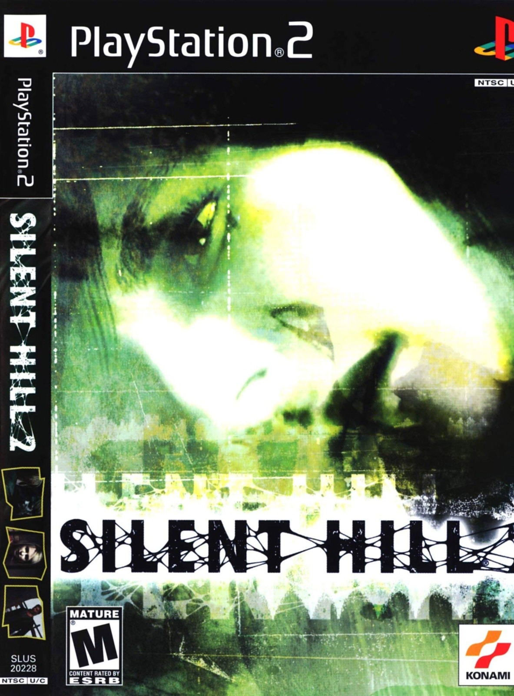

Sinopse
Silent Hill 2 é um jogo de survival horror que segue James Sunderland, um homem que viaja para a cidade misteriosa de Silent Hill após receber uma carta de sua falecida esposa, Mary. Ao explorar a cidade, James enfrenta criaturas monstruosas e começa a descobrir os segredos sombrios de Silent Hill e de sua própria vida.
Com uma atmosfera pesada, uma narrativa complexa e temas psicológicos profundos, Silent Hill 2 é considerado um dos melhores jogos de horror já feitos. O jogo se destaca pela sua abordagem emocional e pela maneira como lida com o medo psicológico, ao invés de apenas sustos repentinos.
Características Principais
- Ambiente de jogo denso e atmosférico
- História profunda e cheia de reviravoltas psicológicas
- Inimigos bizarros e criaturas aterrorizantes
- Jogabilidade focada em exploração, combate e resolução de puzzles
- Trilha sonora e efeitos sonoros imersivos
- Personagens complexos e realistas com motivações sombrias
Imagens Adicionais